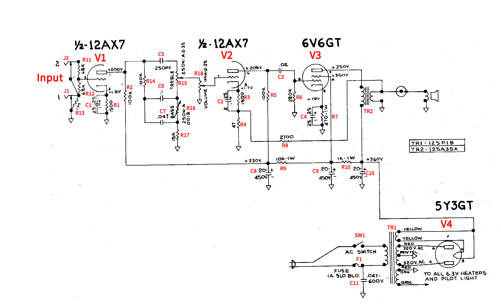

What do all these components do?

| Sub-circuit | Component | Function |
|---|---|---|
| Input | J1 | Jack to connect guitar |
| J2 | Jack to connect guitar | |
| R11 | Sets input voltage to control grid of V1 | |
| R12 | Sets input voltage to control grid of V1 | |
| R13 | Sets input impedance of V1 | |
| V1 | V1 | Amplifies audio, set up as common cathode amplifier. |
| R1 | Sets cathode voltage to be more positive than ground so that current flow through the tube, when the control grid is at 0V, is halfway between saturation and cutoff. | |
| R2 | Converts changing current through the tube into a changing voltage. | |
| C1 | Provides a low reactance path (for AC) around R1 so that cathode voltage is not changed by varying current through tube. Without this capacitor gain of the circuit is reduced. | |
| Equalizer | R14 | Sets series resistance for C6 and C7 paths. |
| R15 | Controls balance of High to Low/Mid audio. | |
| R16 | Controls amount of low frequency audio buy adjusting path to R15 (output) or GND. | |
| R17 | Sets resistance of EQ path to ground for midrange | |
| C5 | Isolates high frequencies to their own path to allow control. Also blocks DC form output of V1 from getting to control grid of V2. | |
| C6 | Isolates low frequencies to their own path to allow control. Also blocks DC form output of V1 from getting to control grid of V2. | |
| C6 | Isolates midrange frequencies to their own path to allow control. Also blocks DC form output of V1 from getting to control grid of V2. | |
| Volume | R18 | Controls volume by creating an adjustable voltage divider. |
| V2 | V2 | Amplifies audio, set up as common cathode amplifier. |
| R3 | Sets cathode voltage to be more positive than ground so that current flow through the tube, when the control grid is at 0V, is halfway between saturation and cutoff. | |
| R4 | Allows changing voltage to be created by changing current through V2 so that negative feedback can be added. | |
| R5 | Converts changing current through the tube into a changing voltage. | |
| C2 | Provides a low reactance path (for AC) around R3 so that cathode voltage is not changed by varying current through tube. Without this capacitor gain of the circuit is reduced. | |
| C3 | Blocks DC from V2 from getting to control grid of V3. | |
| R8 | Provides path for negative feedback to cathode of V2 and determines amount of negative feedback. | |
| V3 | V3 | Amplifies audio, set up as common cathode amplifier. |
| R6 | Sets the control grid of V3 to GND potential when audio is not passing. An unintended charge can develop on the control grid that causes distortion and tube damage without this resistor. We need a large value so that audio is not attenuated. For DC, there is no current flow here (the cap blocks the path) so the resistor should drop no voltage, holding the control grid at 0V. The large value allows AC, however, to have a large voltage drop. Also sets the input impedance of the V3 circuit. | |
| R7 | Sets cathode voltage to be more positive than ground so that current flow through the tube, when the control grid is at 0V, is halfway between saturation and cutoff. | |
| C4 | Provides a low reactance path (for AC) around R7 so that cathode voltage is not changed by varying current through tube. Without this capacitor gain of the circuit is reduced. | |
| TR2 | Converts changing current through tube into magnetic field and then changing current (of lower voltage and higher current) for speaker. | |
| Power Supply | TR1 | Converts wall AC voltage (120V in US) to voltages needed for circuit (320VAC, 5VAC, and 6.3VAC). Also provides isolation from power line for protection of user. |
| V4 | Full wave rectifier converts AC to DC. | |
| C8 | Filters AC from AC+DC output of full wave rectifier. | |
| R9 | Drops voltage so that V3 screen grid is less positive than anode. | |
| C9 | Filters AC from AC+DC output of full wave rectifier. | |
| R10 | Drops voltage so that V2 anode is less positive than V3 anode. | |
| C10 | Filters AC from AC+DC output of full wave rectifier. | |
| SW1 | Turns amplifier on and off by connecting or disconnecting AC power input. | |
| F1 | Disconnects AC power path if too much current flows to protect circuit components. | |
| C11 | Filters out "high frequency" caused by turning on and off switch that can create an arc and damage the power switch. |